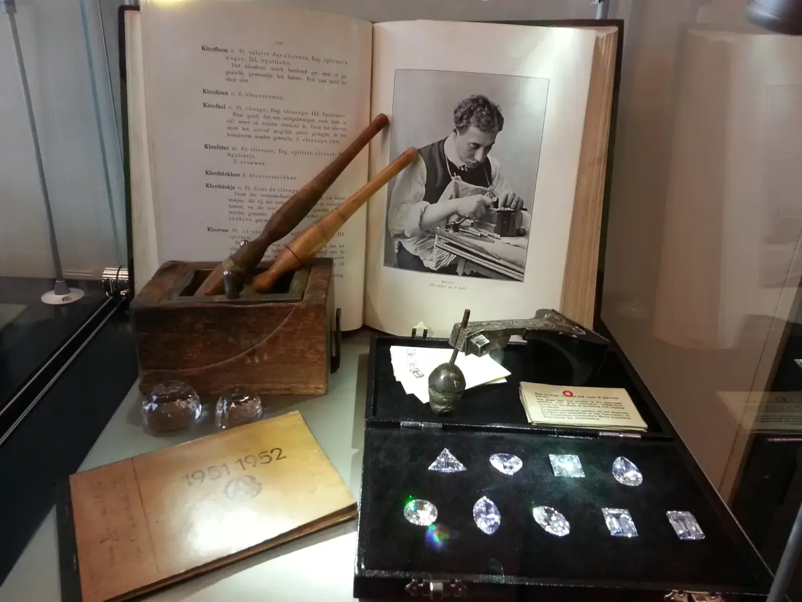
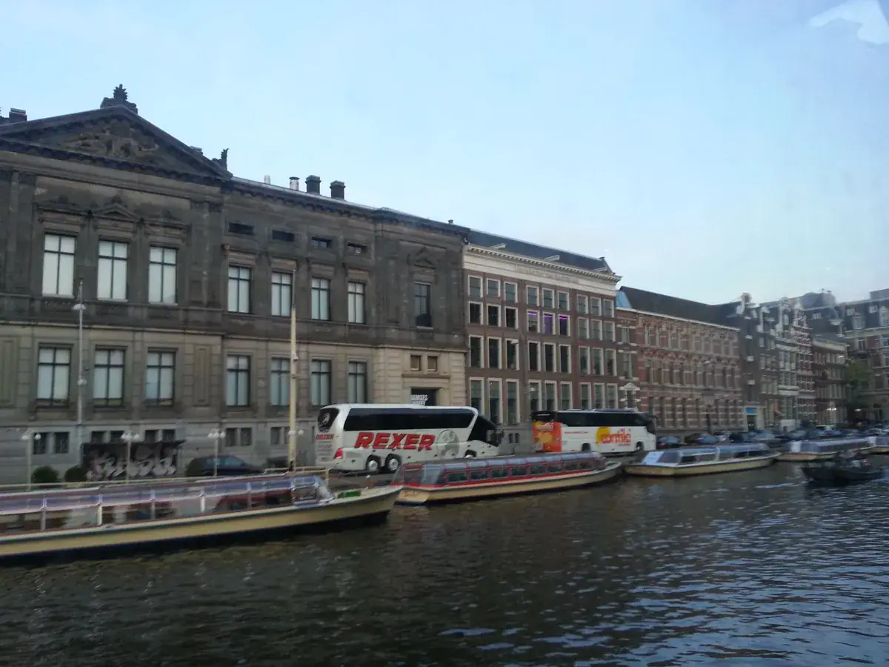
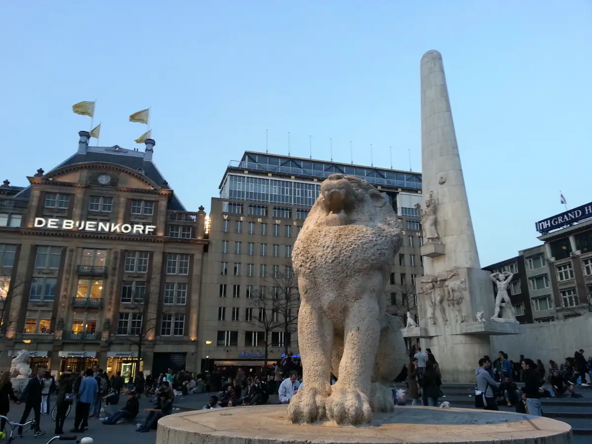
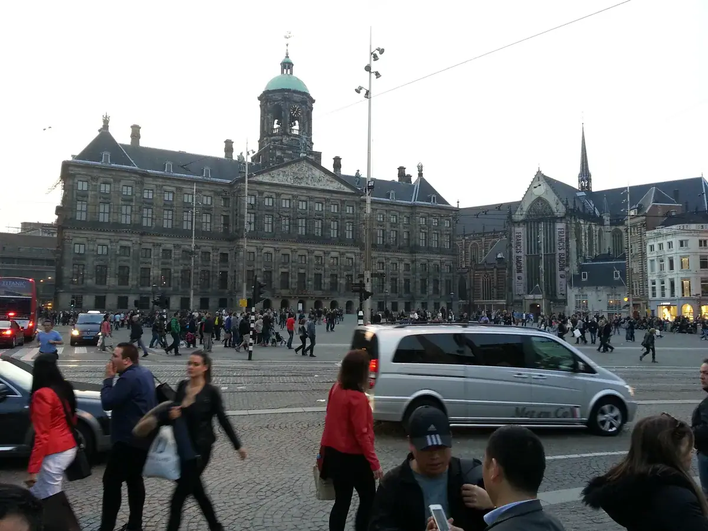

阿姆斯特丹真正的底牌，不是风车，而是资本市场
Amsterdam — Beyond Windmills and Tulips, the Power of Capital

风车、郁金香、钻石、自行车——提起荷兰，人们很容易想到这些熟悉的符号。
但如果只把它们当成风景，就可能错过阿姆斯特丹真正值得研究的地方。
风车曾帮助荷兰人治理水患、拓展土地；郁金香从一场投机热潮，逐渐发展为花卉产业的重要符号；钻石加工让城市积累了专业技艺与商业网络；而在这些产业故事背后，更值得关注的是一套逐渐成形的贸易与资本市场体系。
2015 年的这次荷兰考察，我想带走的不是一份旅游清单，而是一个关于商业的判断：资源有限并不可怕，关键在于能不能把限制转化成新的能力。
风车：土地不是等来的，而是经营出来的
欧洲流传着一句话："上帝创造了世界，荷兰人创造了荷兰。"
这句话带着几分夸张，却点出了荷兰历史中一个重要的现实：水，既是这个国家必须面对的挑战，也是它长期经营的对象。
荷兰地势低平，部分地区容易受到海水与河水影响。为了排水、治理水患和管理围垦土地，人们发展出堤坝、水道、泵站以及风车等一整套水利技术。风车不只是地平线上的风景，也曾是这套系统中的重要工具。
来到阿姆斯特丹附近的桑斯安斯风车村（Zaanse Schans），仍能看到保存下来的传统风车。部分风车过去用于锯木、榨油、研磨原料等生产活动。它们提醒我们：技术的价值，不只在于它看起来多么巧妙，更在于它能否解决一个真实、长期存在的问题。
今天，人们常把荷兰的故事讲成"向大海要土地"。但更值得注意的，是这个国家没有把自然条件当成无法改变的命运，而是通过长期建设和持续维护，把治理水患变成了一套社会与经济能力。
风车的意义，不只是创造了动力，更在于它参与解决了土地如何被利用的问题。

郁金香：泡沫退去之后，产业如何留下来？
郁金香并非荷兰原生植物。它传入欧洲后，逐渐受到市场追捧，也在荷兰留下了著名的金融史故事。
17 世纪 30 年代，部分郁金香球茎价格经历了急剧上涨，随后又迅速回落。这段历史后来被称为"郁金香狂热"（Tulip Mania），经常被用来讨论投机、预期与市场泡沫。
不过，泡沫的故事并不是荷兰花卉产业的全部。
真正值得观察的是：某一种商品可能先因稀缺、审美或市场情绪受到追捧，但要形成长期产业，还需要生产技术、种植体系、交易渠道和稳定的市场需求。郁金香最终成为荷兰的重要文化符号之一，荷兰也发展出具有国际影响力的花卉生产与贸易体系。
这里有一个值得区分的地方：投机可以制造短期价格神话，却不能单独支撑长期产业。能够留下来的，往往是泡沫之外那些可持续运转的生产与商业能力。
从郁金香的故事里，我们看到的不只是市场曾经有多疯狂，更是短期热度与长期产业之间的区别。
钻石：一门生意，如何在城市里形成传统？
阿姆斯特丹曾长期以钻石切割与加工闻名。这个行业的形成，与欧洲人口迁徙、宗教环境、专业技能和国际贸易网络都有关系。
16 世纪末以来，一些来自伊比利亚半岛的塞法迪犹太人迁居阿姆斯特丹。此后，犹太社群中的部分成员逐渐参与钻石贸易与加工。不过，不能把整个行业的形成简单归结为"因为没有行会限制"这一条原因；城市的商业环境、跨境联系和工匠技能，同样是理解这一历史过程的重要线索。
随着贸易发展，阿姆斯特丹一度成为欧洲重要的钻石加工中心。城市中的专业工坊、熟练工匠与国际商贸网络，共同构成了产业基础。
这段历史也有沉重的一面。第二次世界大战期间，纳粹对犹太人的迫害重创了阿姆斯特丹的犹太社群，钻石行业也受到严重冲击。战后，国际钻石加工与贸易的重心逐渐分布到安特卫普、纽约、特拉维夫、孟买等城市。
今天，阿姆斯特丹仍保留着钻石加工的历史记忆和相关参观体验。但比"钻石之城"的名号更值得研究的，是一项产业如何依靠技能、专业分工、交易关系和跨境网络，在一座城市中积累起来。
产业从来不只是某一种产品。它还包括围绕产品形成的人才、技术、信任和市场连接。


自行车：效率不是口号，而是城市系统
在阿姆斯特丹，自行车不仅是一种交通工具，也深深融入了城市日常生活。
当我们看到密集的自行车停放区、专用骑行空间，以及与公共交通相连接的出行方式时，看到的并不只是人们喜欢骑车，而是一套长期形成的城市选择。
城市空间有限，交通需求却持续存在。如何让更多人便捷地完成日常出行，不可能只靠鼓励个人改变习惯，还需要道路设计、停车设施、交通规则和公共政策共同配合。
因此，自行车文化并不是一句"荷兰人更环保"就能解释的。它背后有基础设施的投入，也有城市规划与生活习惯的相互塑造。
这与风车的故事形成了呼应：一个解决土地与水的问题，一个回应城市空间与出行的问题。两者面对的挑战不同，但都说明了同一件事——效率并非凭空产生，而是由系统设计和长期积累支撑起来的。
一个国家真正的韧性，不在于它资源有多丰富，而在于它有没有一套机制，能把偶然和限制都转化成资产。
——董立鑫 海鑫汇创始人兼执行总裁，新加坡世贸秘书长兼首席运营官
真正的底牌：从贸易网络走向资本市场
如果说风车、郁金香、钻石和自行车让人看到荷兰如何应对具体问题，那么阿姆斯特丹的金融史，则提供了另一个观察角度。
1602 年，荷兰东印度公司（VOC）成立，并在阿姆斯特丹发行股份。围绕股份交易逐渐发展起来的市场，被广泛视为现代证券交易与资本市场史上的重要起点之一。
这件事的意义，不只是"出现了一家大公司"，而是商业活动开始拥有更成熟的资本组织方式：企业可以通过股份汇集资金，投资者可以参与风险与收益，资本也能够在一定的市场机制下流动。
当然，资本市场并不是阿姆斯特丹所有产业成功的唯一原因，也不能单独解释一个国家数百年的发展。但它确实为远距离贸易、大规模商业活动和企业融资提供了重要的制度与金融工具。
从这个角度回看前面的故事，就会发现：风车帮助人们治理土地，专业工坊积累产业技能，城市交通系统提高日常效率，而资本市场则让资金能够参与更大规模、更长周期的商业活动。
它们不是同一回事，却都说明了一个道理：商业能力不只体现在某件产品上，还体现在支撑产品、企业与市场长期运转的系统之中。
这一站留下的判断
回看阿姆斯特丹，风车、郁金香、钻石和自行车并不是一组偶然拼在一起的旅游符号。它们分别指向土地治理、市场演化、专业产业和城市效率；而这座城市的金融史，又让我们看到资本与商业制度如何参与更大规模的经济活动。
荷兰的经验并不能被简化成一个万能公式。历史有它的复杂性，产业的发展也离不开具体的时代条件。
但这次考察让我更愿意从一个问题出发，理解一座城市、一个产业，甚至一家企业：
面对资源、空间或市场的限制，它有没有建立起一套能够持续解决问题、积累能力，并把能力转化为商业价值的机制？
真正值得学习的，或许不是某一种风车、某一朵郁金香，或某一个金融市场，而是从眼前的问题出发，一步步建立起能够长期运转的系统。
——董立鑫
本文整理自董立鑫（Bruce Dong）海外产业考察记录，首发于海鑫汇。